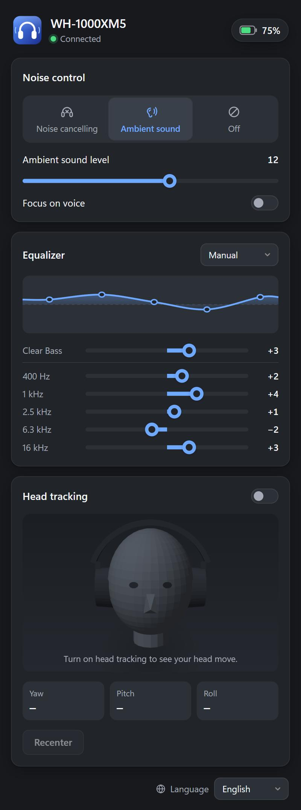

Noise cancelling & ambient sound
Switch between noise cancelling, ambient sound and off. Set the ambient level (1–20) and focus on voice.
Free · Open source · Windows 10 & 11
Switch noise cancelling and ambient sound, set the ambient level, tune the equalizer and check the battery, right from your desktop. Sony's Headphones Connect / Sound Connect app only exists for phones; XM Control brings those controls to Windows.

XM Control talks to the headphones over the same Bluetooth connection you already use for music. Nothing to pair again, nothing running in the cloud.
Switch between noise cancelling, ambient sound and off. Set the ambient level (1–20) and focus on voice.
Pick a preset or set the bands yourself: 5 bands and Clear Bass, or the 10-band EQ of the WH-1000XM6.
See the battery level and charging state at a glance, in the window or by hovering the tray icon.
Close the window and XM Control stays by the clock. Right-click the icon to switch modes in one click.
Watch a live 3D head follow your movements, using the motion sensor in the WH-1000XM5 and XM6.
Only a short whitelist of commands can ever be sent. Firmware updates, factory reset and pairing changes are impossible.
XM Control recognises your headphones by their Bluetooth name and shows the controls that model has.
| WH-1000XM4 | WH-1000XM5 | WH-1000XM6 | |
|---|---|---|---|
| Noise cancelling / ambient sound / off | ✓ | ✓ | ✓ |
| Ambient level, focus on voice | ✓ | ✓ | ✓ |
| Wind noise reduction | ✓ | – | – |
| Automatic ambient level | – | – | ✓ |
| Equalizer | 5 bands + Clear Bass | 5 bands + Clear Bass | 10 bands |
| Battery | ✓ | ✓ | ✓ |
| Head tracking | – | ✓ | ✓ |
| Tested on real headphones | Not yet | Yes | Yes, by a user |
Own a WH-1000XM4? Please tell us what works.
No Python, no account, no administrator rights.
In Windows Settings → Bluetooth & devices, as you would for music.
From the latest release:
the setup.exe installer, or the portable .zip.
Run XM Control. It finds the headphones and shows their settings.
XM Control is not code-signed yet, so Windows may show "Windows protected your PC". Click More info → Run anyway.
No. Sony's Headphones Connect and its successor Sound Connect are only for Android and iOS. XM Control is an unofficial, free Windows app that offers the most used settings on your PC.
Yes. With the headphones connected to your laptop over Bluetooth, open XM Control and pick noise cancelling, ambient sound or off. It works while music or calls are playing.
The WH-1000XM6 works (confirmed by a user), including its 10-band equalizer and automatic ambient level. WH-1000XM4 support is built from public protocol documentation but has not been tested on real headphones yet.
XM Control can only send the commands it needs to read and change these settings. Every message is checked against a whitelist, so firmware updates, factory reset, power off and pairing changes can never be sent. The source code is public on GitHub.
No. The download contains everything. The phone app can stay installed; just do not use both at the same moment.
Yes: sonyxm.exe comes with the app, for example sonyxm nc on,
sonyxm ambient 12 or sonyxm battery.